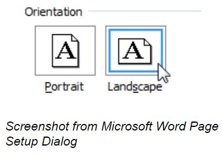

Document design matters in every project you compose in the workplace, even something as boring as the tables you include in your work. These resources demonstrate how to use document design to make your tables polished, professional, and easy to read.
Apply These Strategies to Your Project
- Maximize document space in your table by changing your document to landscape orientation, and changing the paper size to legal (8.5" by 14").
- Choose a font size that is large enough to read without magnification.
- Align the text in your table to flush left horizontally and to the top of the cell vertically.
This choice is the easiest to read according to readability studies. Remember the F-shaped reading pattern. - Use the 10 Easy Ways to Turn a Dull Word Table into a Design Element.
 TIP: There are a lot of ads on this page. If the ads bother you, you might try one of an ad blockers like Adblock (for Chrome ).
TIP: There are a lot of ads on this page. If the ads bother you, you might try one of an ad blockers like Adblock (for Chrome ).
- Watch the relevant Lynda.com video to learn more about basic options for Formatting Table Appearance for Word 2016. If you have another version of Word, you should notice similar options in your version. The video is free with your VT login. Follow these instructions to login.
- To learn even more about how to design your table, watch the entire Lynda.com chapter on Tables or skip around and choose the sections you need: Chapter 8: Working with Columns and Tables in Word 2016.
- Keep relevant information together by controlling your page breaks. If a row of information breaks onto two pages, all you need to do is change a checkbox in Word to keep rows of information together. Watch this Auburn University Writing Center video to learn how to change that setting in Microsoft Word for Mac. The process for Windows is similar, so it’s still worth watching the video if you’re a Windows person. You can use the instructions from Microsoft to make the change.